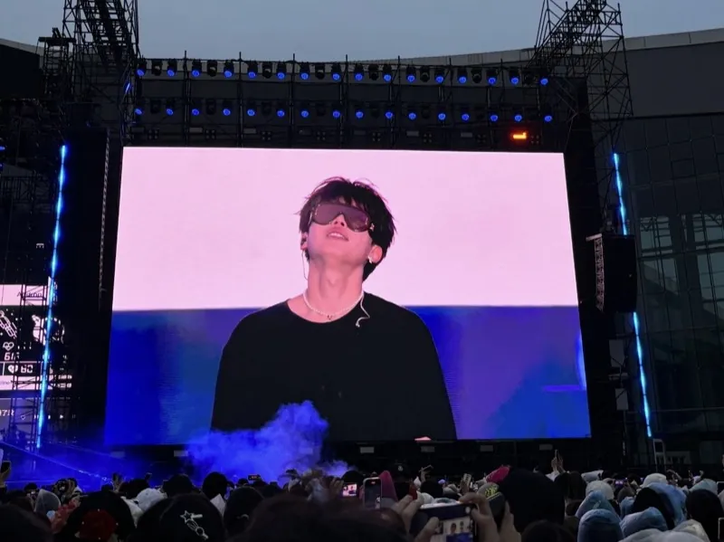
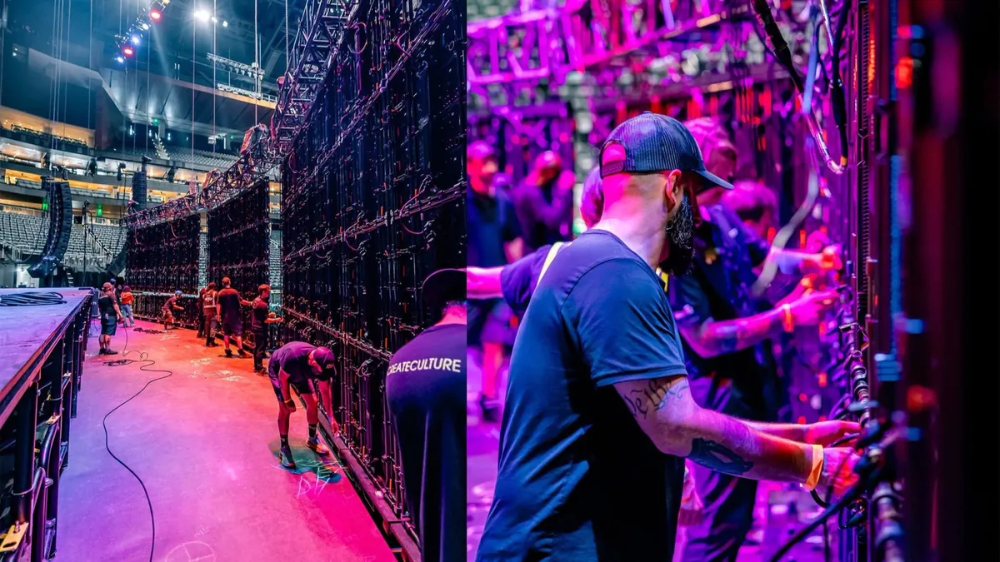
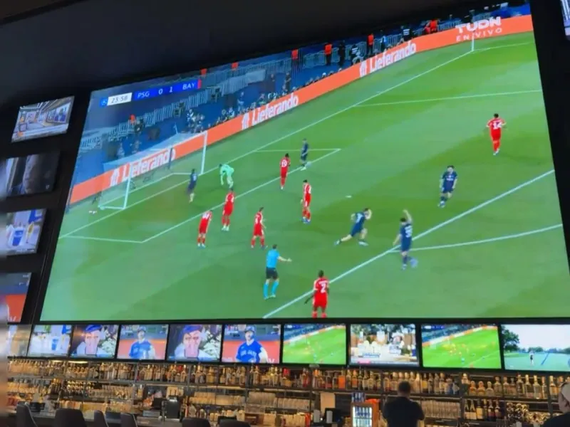
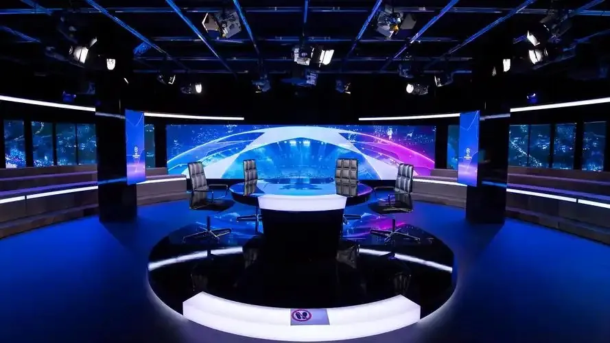

Live-event LED screens show the stage in near real time, which is where latency becomes visible (Asia Vision image library).
LED Video Wall Latency: How Many Frames of Delay Is Acceptable?
2026-11-16Asia VisionTechnical Guide
What is LED video wall latency? It is the time between a video frame arriving at the wall's input and that frame being lit on the LEDs. It is usually quoted in milliseconds or in video frames. For a loop of brand content the delay is invisible. For a live camera feed, a performer on a giant screen, a news presenter or an interactive game, a few frames of delay is the difference between a wall that feels live and one that feels late.
This guide is for AV integrators, rental companies and venue technical directors who need to write a latency requirement into a specification, or who are comparing two LED systems and want to know what the figure on the quotation actually means. It does not replace the processor buying guide, which treats latency as one section among many, or the ST 2110 signal-chain article, which covers IP video paths. This page is about latency itself: what it is, where it comes from, what to ask for, and how to measure it.
Latency Is Not Refresh Rate or Frame Rate
Three numbers are often confused on LED data sheets, and only one of them is about delay.
Frame rate is how many different pictures per second the system accepts. The Asia Vision specification sheets list a frame rate of 50 / 60 Hz for every series.
Refresh rate is how often the LEDs are redrawn each second. The same sheets list ≥3840 Hz on series such as S Series, M-PRO and R-PRO, and ≥7680 Hz on COB Z, RH-PRO and the E-PRO rental sheets. A high refresh rate helps cameras and low-grey smoothness; see the refresh rate guide and the camera flicker guide.
Latency is the elapsed time from input to light. It depends on how many devices and buffers the signal passes through. A wall can have a very high refresh rate and still add several frames of delay in the processor.
The practical rule is simple: never accept a refresh rate or a frame rate as an answer to a latency question.

Image magnification (IMAG) is the use where a delay between the stage and the screen is easiest to notice. Outdoor event LED screen, Asia Vision case library.
Frames to Milliseconds: The Arithmetic
A latency quoted in frames means nothing until the frame rate is stated, because the length of a frame changes with the source. One frame lasts 1000 ÷ frames per second milliseconds.
Source frame rate
One frame
Two frames
24 fps
41.67 ms
83.33 ms
25 fps
40.00 ms
80.00 ms
30 fps
33.33 ms
66.67 ms
50 fps
20.00 ms
40.00 ms
60 fps
16.67 ms
33.33 ms
120 fps
8.33 ms
16.67 ms
So "two frames" at 60 fps is about 33 ms, but "two frames" at 30 fps is about 67 ms. A quotation that says "low latency" or "2 frames" without a frame rate cannot be compared with another quotation. Ask for milliseconds, the source frame rate, and the point where the clock starts and stops.
Where the Delay Comes From
An LED wall is a chain, and every link that stores a frame before passing it on adds delay. A typical live chain looks like this:
The source. A camera, a media server or a switcher output. A camera that already adds a frame or two of its own processing is outside the wall's control, but it counts in the audience's experience.
Switchers, scalers and converters. Each device that converts a format, scales a picture or changes a frame rate typically buffers at least part of a frame. Chaining three of them can cost more than the LED processor itself.
The LED processor or sending card. It scales the picture to the wall's native resolution, applies colour and brightness processing, and splits the canvas across the output ports.
Cabling and receiving cards. The data travels to the cabinets and each receiving card holds the pixel data it needs for its scan. Asia Vision's specification sheets name the standard receiving card for each series, for example A5S-PLUS on S Series and A8S-N on COB Z, COB ZH, EH-PRO and EF.
Driver ICs and the scan. The driver ICs convert data into current and light the LEDs line by line within each refresh cycle.
The processor is usually the largest single contributor on the LED side, but the delay you see on the wall is the sum of the whole chain. Rear-of-wall work, such as cabling and signal distribution, is where the physical chain gets built.

The signal path ends at the back of the wall: cabling, receiving cards and power are all part of the chain a latency figure has to cover. Concert stage, Asia Vision image library.
How Much Latency Is Acceptable?
There is no single correct number. These are common planning targets used by integrators; they are rules of thumb for writing a specification, not guarantees from any manufacturer.
Use
Common planning target
Why
Signage and recorded playback
Not critical
No live reference to compare against.
Presentations and corporate AV
Roughly under 100 ms
Slide changes and pointer movement look immediate.
Live image magnification (IMAG) and concerts
About two frames or less
The audience compares the screen with the real performer and the sound.
Broadcast and on-camera sets
As low as the chain allows, with frame sync
Lip-sync and camera timing.
Interactive, gaming and esports
About one frame or less
Controls must feel responsive.
XR and in-camera VFX
Specified together with camera tracking and genlock
The wall is part of the camera's pipeline.
For broadcast, the figure most often quoted for lip-sync is the EBU recommendation that sound should not run more than about 40 ms ahead of or 60 ms behind the picture. In a venue, physics already adds delay for the audience: sound travels at roughly 343 metres per second, so a seat 20 metres from the PA hears it about 58 ms after it leaves the speaker. That is one reason a screen two frames behind a live performer is usually acceptable, while one six frames behind starts to look wrong. For XR work, wall latency is only part of the problem; see the multi-camera frame remapping article.

Live sport on a bar wall: viewers compare the screen with other feeds in the room, so an extra delay is noticeable. Boston soccer bar, Asia Vision case library.
How to Measure Latency on a Real System
A manufacturer's figure is only valid for the configuration it was measured in. Measure your own chain, on the final hardware, with the final source.
Put a millisecond clock on the source. A stopwatch app on a tablet or a test generator that displays a running counter works. Feed the same signal to a reference monitor and to the LED processor.
Film both screens at once. Use a camera that records at high speed, such as a phone in slow-motion mode, and film the reference monitor and the LED wall in the same frame.
Read the difference. Step through the video and compare the counter on the monitor with the counter on the wall. The difference, minus the reference monitor's own delay, is the added latency.
Repeat and record the spread. Take several readings. Write down the source format, frame rate, processor mode, scaling setting and number of devices in the chain.
Measure where it matters. Read the wall at the same position every time, because the scan is not instantaneous across the whole picture.
This method gives a practical comparison on site. A laboratory measurement with a light sensor and a trigger is more precise, but the camera-and-clock method is enough to catch a processor mode that adds frames.
How to Reduce Latency Without Guessing
Send native resolution. If the source already matches the wall's canvas, the processor can skip scaling.
Match frame rates. Avoid frame-rate conversion between the source and the wall. Choose 50 or 60 fps to suit the region and the cameras and keep it consistent.
Remove unneeded devices. Each extra converter, scaler or switcher in the path is a place a frame can be stored.
Use a low-latency mode if the processor has one, and read the trade-off. Some processors reduce latency by limiting pixel capacity or input formats. Brompton's documentation for its ultra-low-latency mode is a public example of that trade-off. Confirm what your chosen processor gives up.
Lock the cameras. If cameras shoot the wall, use frame sync (genlock) where the system supports it, and read the camera flicker guide for shutter and refresh pairing.
Test the final chain. A latency figure measured on a bench with a laptop is not the figure you get with a broadcast switcher and a long cable run.

On a broadcast set the wall sits inside the camera shot, so latency, frame sync and refresh all have to be agreed together. Studio LED wall, Asia Vision image library.
What Asia Vision Publishes, and What to Ask For
The Asia Vision product pages and specification sheets publish the following relevant items: refresh rates of ≥3840 Hz or ≥7680 Hz depending on the series; a frame rate of 50 / 60 Hz; the standard receiving card for each series; and, on the RH-PRO COB page, a design with dual power, dual receiving card and dual signal path. The company's case library describes a product-launch backdrop run at 7680 Hz refresh for live-stream broadcast. The case pages and the RH-PRO COB, E-PRO and COB Z pages are the starting point for broadcast and live-event walls.
The product pages and specification sheets do not publish a latency figure in milliseconds or frames. Do not infer one from the refresh rate. If latency matters on your project, ask for it as a written number for your configuration: the processor model, the source format and frame rate, the scaling setting, and the receiving card.
What to Put in the RFQ
Suggested RFQ wording: "The bidder shall state the end-to-end latency of the proposed LED system in milliseconds, from the input of the LED processor to light output at the centre of the wall, at [50 / 60] fps with [source format]. The bidder shall identify the processor, the receiving card, the processing mode used for the figure, and any feature that must be disabled to reach it. The bidder shall state whether the figure changes with scaling, colour processing or frame-rate conversion. A refresh rate or a frame rate is not accepted as a latency figure."
Add the use case (IMAG, broadcast, interactive), the target in milliseconds, the cameras and their frame rate, whether frame sync is required, and a site acceptance test that uses the camera-and-clock method above. Product pages publish a 3-year warranty and 18-day standard factory dispatch; allow time in the programme for a pre-show latency test on the final chain.
FAQ
Q: What is a good latency for an LED video wall?
A: It depends on the use. Signage does not need a low figure. Live image magnification and concerts usually aim for about two frames or less, which is about 33 ms at 60 fps or 40 ms at 50 fps. Interactive and gaming uses aim for about one frame or less. Always ask for milliseconds and the frame rate.
Q: Does a high refresh rate mean low latency?
A: No. Refresh rate is how often the LEDs are redrawn, and it mainly affects camera flicker and low-grey smoothness. Latency is the delay from input to light and depends on the processor, converters and cards in the chain. The Asia Vision specification sheets publish refresh rate and frame rate but do not publish a latency figure.
Q: How do I test LED wall latency on site?
A: Show a millisecond counter on the source, feed the same signal to a reference monitor and the wall, and film both with a high-speed camera. Read the difference between the counters, repeat several times, and record the source format, processor mode and devices in the chain.
Q: Does the LED processor or the cabinet add more latency?
A: Typically the processor and any scalers or switchers upstream add more delay than the receiving cards and driver ICs. The cabinets still matter for refresh and scan behaviour, but the biggest levers are usually the processor mode and the number of devices in the path.
Q: Does Asia Vision publish LED wall latency figures?
A: The product pages and specification sheets list refresh rate, frame rate and the standard receiving card, but no latency figure in milliseconds or frames. For a live or broadcast project, request a written latency figure for your exact processor, source format and settings.
Sources
Asia Vision specification sheets (AV-S, AV-M-PRO, AV-R-PRO, AV-Z, AV-RH-PRO and AV-EP series PDFs under /downloads/specs/): refresh frequency, frame rate 50/60 Hz and standard receiving card fields.
Asia Vision product pages: RH-PRO COB (dual power, dual receiving card, dual signal path), E-PRO, COB Z. Case library: product-launch backdrop with 7680 Hz refresh for live-stream broadcast.
Frame-duration arithmetic: 1000 ÷ frames per second. Speed of sound about 343 m/s at 20 °C.
EBU Recommendation R37 on the relative timing of sound and vision for broadcasting (commonly quoted as audio no more than about 40 ms early or 60 ms late).
Brompton Technology, Tessera documentation: Ultra Low Latency mode and its pixel-capacity trade-off. Show Tech LED video wall glossary (input lag). Led-Tek, 'How much latency does a LED wall have?'. Public competitor and reference pages used for the research notes, not for Asia Vision product claims.
Specifying an LED wall for live events or broadcast? Send the use case, the source and frame rate, and the processor you plan to use, and we will reply with the cabinet data and what can be confirmed in writing. Start a project enquiry.